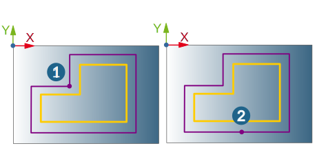

Contours
Define machining contours, the vertical machining area and cycle-specific contour parameters.
Contour selection
The following can be selected as 2D machining contours: points (drilling only), arcs, circles, reference lines, curves and edge curves of surfaces. Several contours or holes can be machined in one job. The number of selected contours is displayed.
Contour attributes
To define contour attributes (top, bottom), select the machining contour in the contour list. By making multiple selections in this contour list, you can quickly define the same top and bottom values for several contours.
Use the following buttons to change the order of selected contours or delete a contour. (1) To the top, (2) Up, (3) Delete, (4) Down, (5) To the bottom.
 |
Top: Start of machining in Z direction (1).
Bottom: End depth of machining in Z direction (2).
Both parameters are relative to the current frame.
It is possible to have various vertical machining areas for the different machining contours in a job. By making multiple selections, the same top and bottom definitions can be applied simultaneously to different contours.
 |
Both parameters can be defined as absolute and relative values, and as Thickness. Thus top and bottom definitions can be made with various measurements.
Absolute (jobframe) (A): The values you set are relative to the current frame. Use the absolute dimensions when a drawing has no defined Z coordinates (2D drawing). In these cases, define the top (1) as absolute and the bottom as relative or as absolute depending on the dimensions in the drawing (3). Selected contour (2)
Specifying relative dimensions (B): Relative values are relative to the position of the CAD geometry selected in the model. This way of specifying top (1) and/or bottom (3) should be used for drawings that have Z information (for example, 3D contours, solids, defined thicknesses). Here, (2) stands for Z = 0 as the upper edge of the geometry.
Working with thickness (C): Thicknesses are relative to the position of the CAD geometry selected in the model. This way of specifying top (1) and/or bottom (2) should be used for drawings that have Z information (for example, 3D contours, solids, defined thicknesses).
 |
Examples:
UE Contour (1): Machining begins each time at the upper edge of the object and ends at the object's lower edge.
|
Top |
Relative |
0 |
|
Bottom |
Thickness |
0 |
Bottom of contour (2): Machining begins in each case at the object's lower edge (thickness 0) and ends at the specified bottom.
|
Top |
Thickness |
0 |
|
Bottom |
absolute/relative/thickness |
-10 |
 |
Relative to top: The bottom (2) relative to top refers to the defined top value (1).
 |
Select the Preferred start point, End point or Plunge point checkbox and select a point.
Freely select the start point (1) for each contour.
 |
Set an end point (2) if the contour is to be machined only partially or if there should be an overlap.
 |
Plunge point: The plunge point (1) applies for the infeed to the first workplane. The cutter moves directly from the plunge point to the starting point or to the approach macro position. The plunge point is not collision checked.
 |
Reverse: In the default setting the machining direction follows the direction of the selected contour. This can be seen in the graphic preview. If the generated toolpaths do not result in the intended machining direction, select the relevant contours and select the Reverse option.
Warning
If you change the machining direction, you should change the cutter position as well.
Overlap: An overlap is only permissible for closed contours. The toolpath will move the tool past the start point (1) until it reaches the given end point (2).
 |
Options
Overlap off: Select this option when the tool should not perform an overlap on the closed contours.
Smooth overlap: Select if the tool is to perform a smooth overlap on the closed contour. Define the Length (2) of the overlap. Use Distance (3) to define the maximum lateral distance of the tool from the model during the overlap.
(1) Start point
(4) = Toolpath points: are shown when this is activated on the General dialog page (in the Toolpath visualization area).
 |
Standard: Select this option when the tool should perform an overlap on the closed contours. Define the Length of the overlap (2).
Optimization
Optimize start points: For closed contours, a search is automatically performed to find the best start points that will facilitate a collision-free standard macro. If a manual start point is defined, this is the preferred start point. Otherwise, either the outer edges (1) or the center point of the longest contour element (2) is used as a start point.
|  |
Technology
Define technology parameters.
Feedrate options
Adjust the standard feedrate (measured at the tool center point) for individual contour elements.
Center (Standard): The contour is machined with the standard feedrate.
Edge control: Optimize the feedrate at edges. Two parameters limit the reduction/increase of the feedrate: Min. feedrate (factor) and Max. feedrate (factor). The factor value refers to the standard feedrate at the reference point of the tool and controls the feedrate at the contact point. Permissible values for the Min. feedrate (factor) are between 0 and 1, for the Max. feedrate (factor) between 1 and 10.
Same tool for contours and holes
Using the Edge control options, the same tool can be used for both chamfering contours and drilling holes in one job.